the thread falls awayand her things come down
Thirteen changes from one message. The bitten ending plays out properly in the game now: the thread drops off the doll, she walks to the candle and sits down, the thing blows the candle out where it stands, and its neck meets its head without a gap. No piece of thread is left glowing on black between screens, and the end cards and credits skip when held. Her shelf is now the shelf itself, close up: you take a keepsake down and put it back. The last film is softer, and the film of the bitten ending stops before the chairs.
when I cut it it should actually fall off the doll, not just become grey. When doll is walking to the candle, the legs are moving to slow, it is flowing over the ground. Make it walk to the candle and sit down. […]
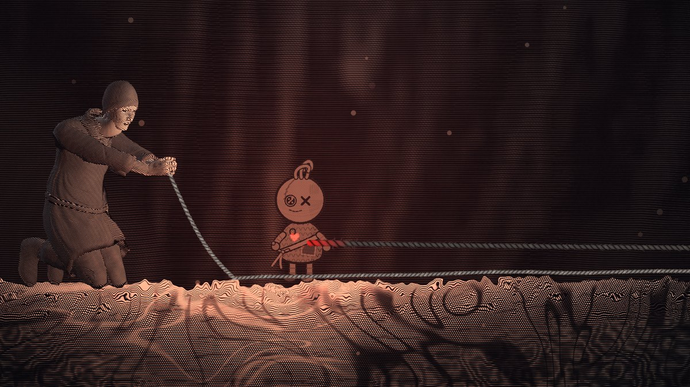
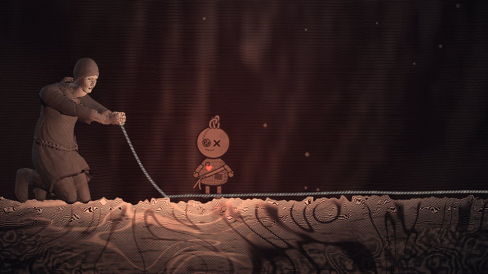
BeforeAfterDrag the thread to compare
Two seconds after the bite
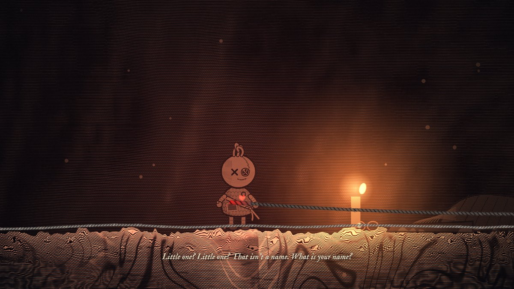
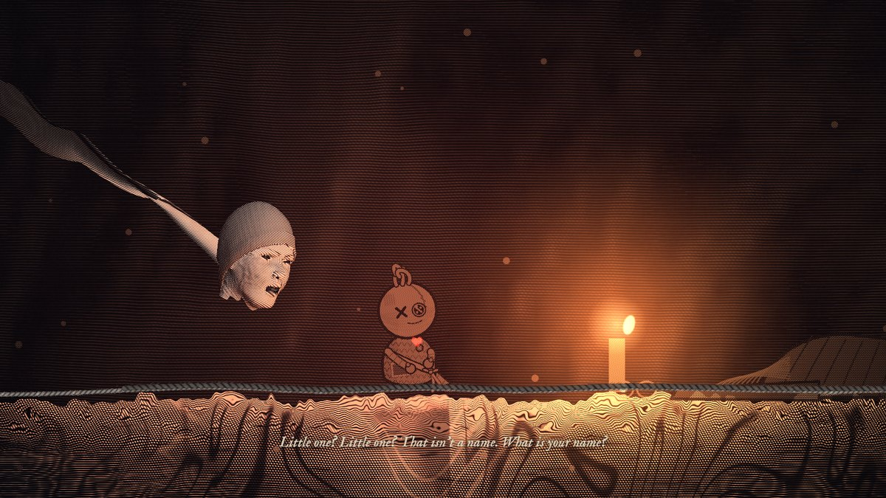
BeforeAfterDrag the thread to compare
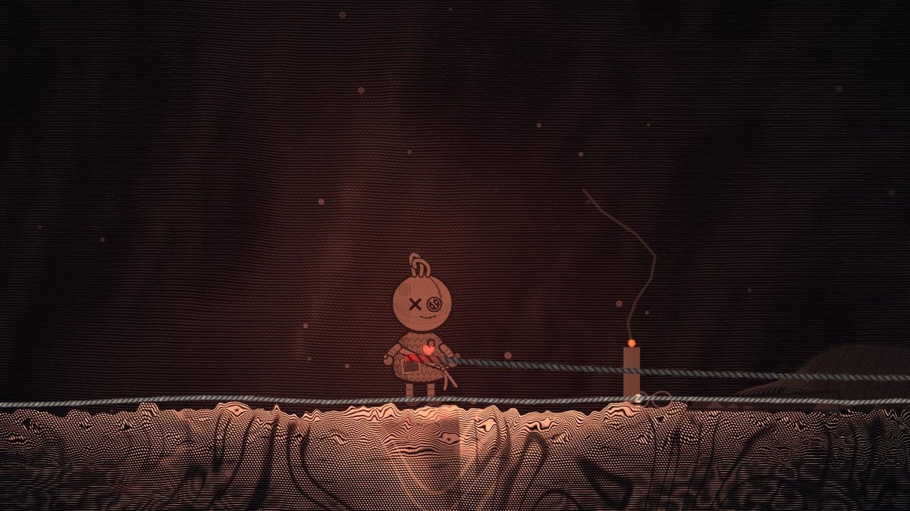
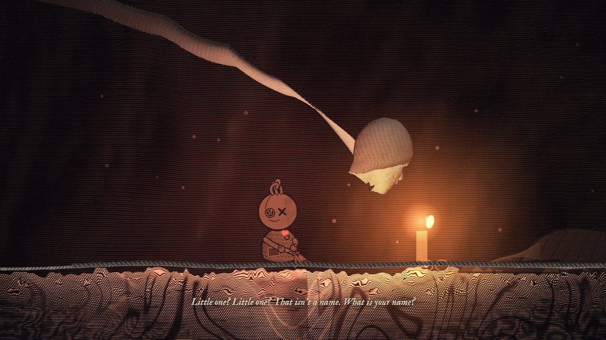
BeforeAfterDrag the thread to compare
Before, the head kept facing the doll while the flame went out a metre away. Now, for the blow, it comes down beside the candle, turns its face to the flame, and blows on it, and then the light goes.
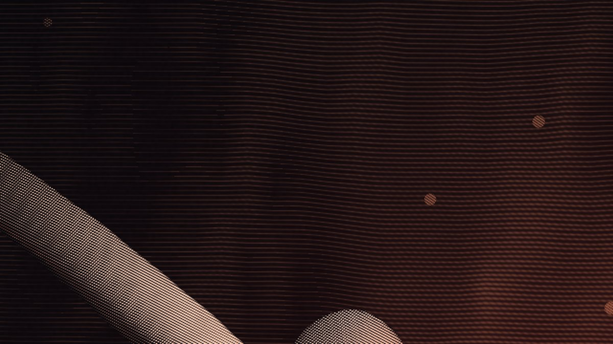
BeforeAfterDrag the thread to compare
The neck is a chain of joints laid along a curve, and each joint used to turn with the curve. The head turns to where it looks. Where those two disagreed (a neck coming in from the side), the last ring of the neck stood tilted against the head and the seam opened dark on one side. The last part of the neck now eases round to the head's own angle, so the ring meets the head square. This applies everywhere the long neck is used, the climb included.
The monster should not repeat "What have you done" multiple times, one is okay, but there should be other lines.
It said that line three times: once, again slowed down a moment later, and once more as it fell. Now it says it once, and two new lines take the other places. Both were recorded in her voice the same way as all of hers (cast reference, design and clone takes, chosen by words, likeness, age and pace) with the second, lower voice under them. The bite is a second longer so the second line finishes before it lunges.
After the bite, low and cold: “You let go. You were never to let go.” (the one rule in her first note, turned round).
Falling down the well: “Hold on to me!”
make sure that between cutscenes, titles and etc I don't see just a piece of rope
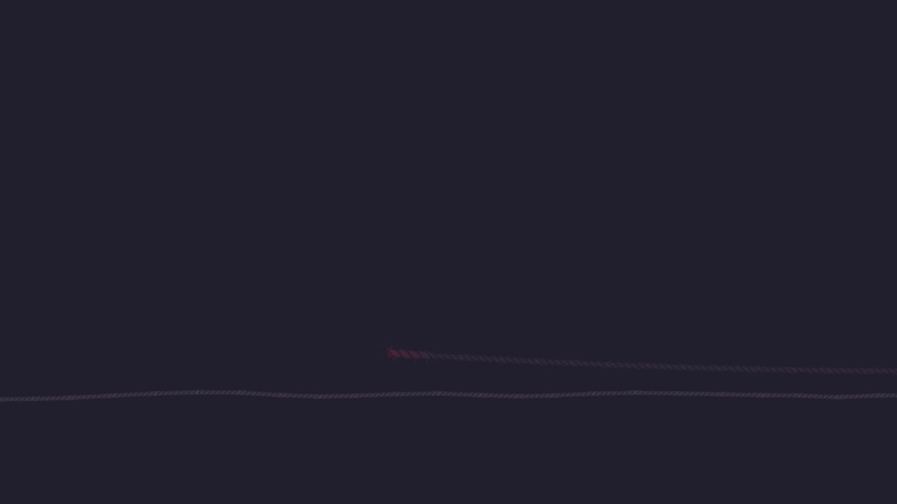
BeforeAfterDrag the thread to compare
The moment between the credits and the last film, brightened three times so it can be seen
The cards after the film and the credits now skip when a key is held, like the films: the same “hold to skip” with its red line filling, the same keys, and through black. Held on the cards, they go straight to the credits; held on the credits, they go on to what comes after them. A single press no longer skips the credits by accident.
Its last shot, the chairs and the names, is gone: that belongs to the film after the titles. The film now ends going down the well into the dark; it is 31 seconds instead of 45. Its sound was mixed again without that shot and is still exactly on the picture.
for the collectibles on the shelf - their outline is too thick when they are just in the world, make it thinner. And make "Her shelf" more interactive - it should be an actual close up of the shelf where I can pick (click) an item and it opens full screen. And add some sounds of interactions.
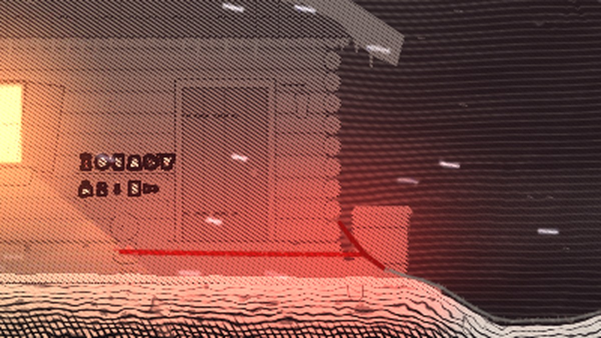
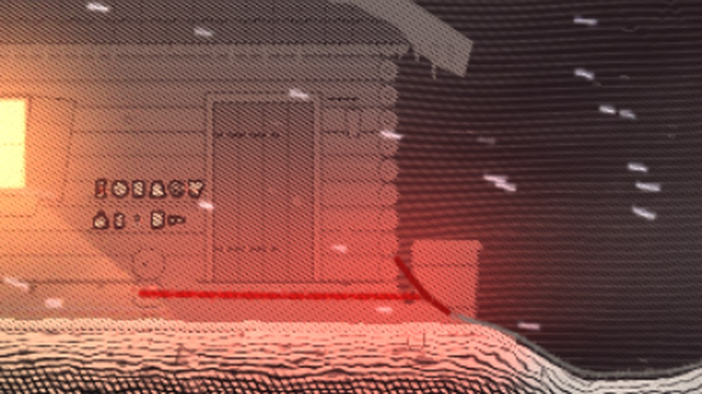
BeforeAfterDrag the thread to compare
On the shelf by her door, at the game's own distance. Things lying about in the caves get the same thinner line; held up close they keep the doll's
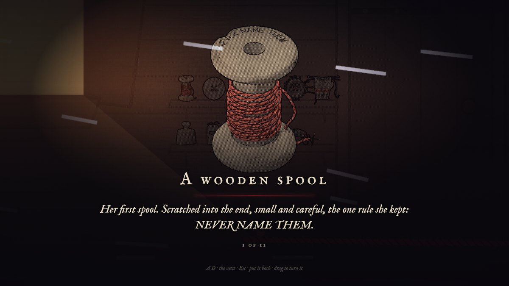
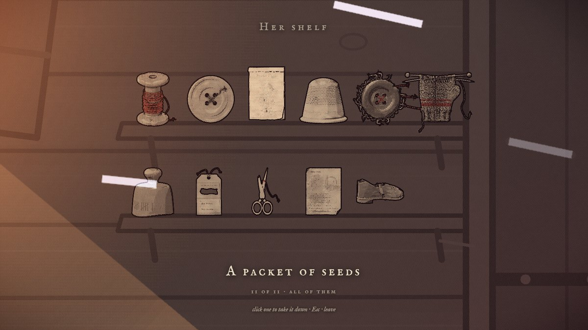
BeforeAfterDrag the thread to compare
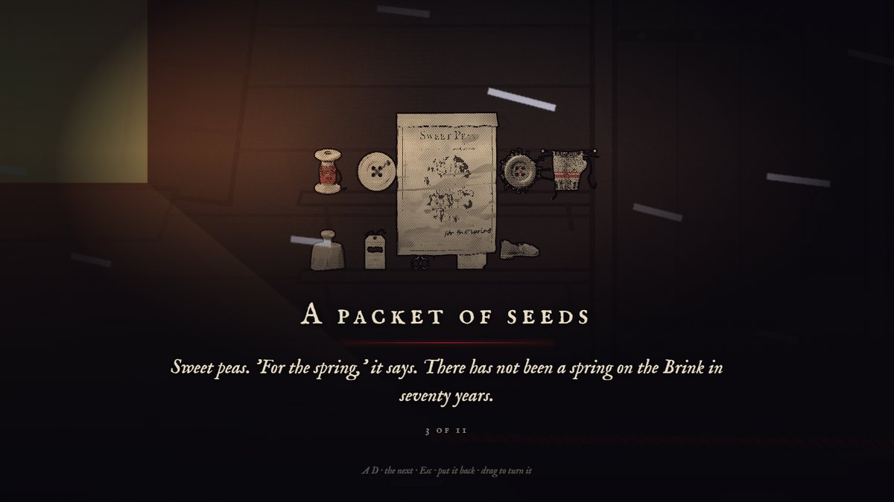
the last cinematic has too harsh post processing, make it a bit smoother
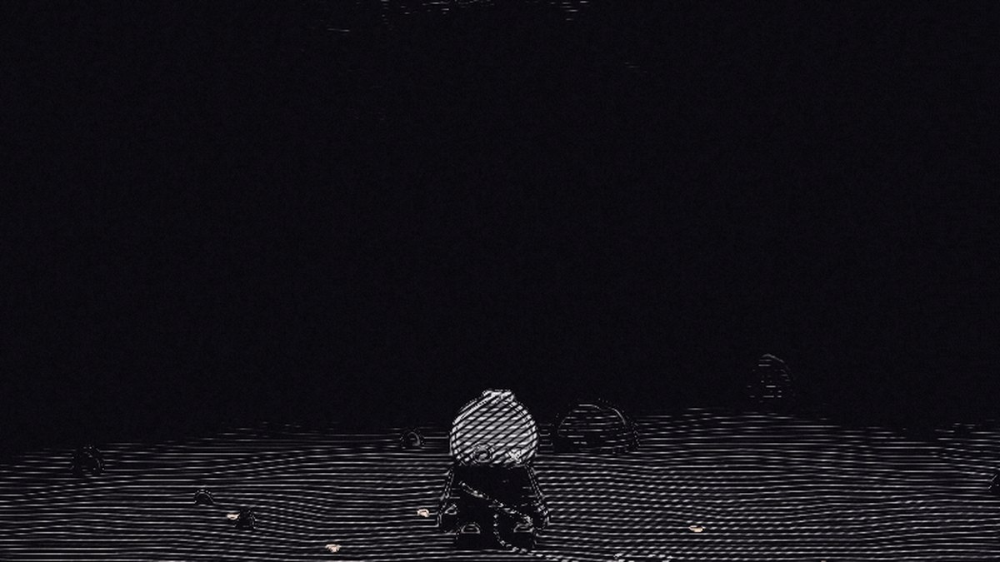
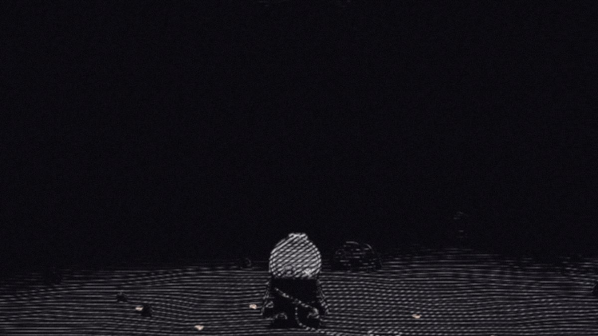
BeforeAfterDrag the thread to compare
The engraving of that film has a new gentler setting: the lines have softer edges and blend a little into their own tone, and the dark comes on gradually instead of where a line stops. The contrast and darkness stay as they were, and its flicker went down from 2.95 to 1.79.
| Check | Result |
|---|---|
| Whole game, bot, plain | reaches the choice |
| Whole game, bot, frayed | reaches the choice |
| Bitten ending end to end (hidden window) | no errors |
| Bitten film, sound against picture | 0.0 ms |
| Last film flicker | 2.95 → 1.79 |
app/src/ending.jsapp/src/thread.js (letGo)app/src/figure.js (headTo)app/src/main.js, app/src/shaders.js, app/src/props3d.jsscripts/voice/lines.py, app/assets/voice/scripts/cine/edit.py, scripts/cine/post.py (--soft)